Generated from PS4 NOR EASYTOOL V1 (by ISLAM JAMEL). Machine-readable source: kb.json.
مولّدة من PS4 NOR EASYTOOL V1 (بواسطة ISLAM JAMEL). المصدر الآلي: kb.json.
Community corpus — live stats
Anonymized health reports contributed by technicians. … reports so far. Contribute yours →
Loading live stats…
القاعدة المجتمعية — إحصاءات حيّة
تقارير صحة لا تكشف هوية الجهاز يساهم بها الفنيون. … تقرير حتى الآن. ساهم بتقريرك →
جارٍ تحميل الإحصاءات…
Status: Still under active development (قيد التطوير).
Support the work: paypal.me/islamjamelak · code & data by ISLAMGAZA.
Assembled with opencode — for the hands that repair, not the bins that fill. Every console brought back to life is a small victory; this project only helps map the way.
الحالة: لا يزال قيد التطوير النشط (قيد التطوير).
ادعم العمل: paypal.me/islamjamelak · الأداة والبيانات من ISLAMGAZA.
صِيغَتْ بـ opencode — لأجل الأيادي التي تُصلح، لا للحاويات التي تمتلئ. كل جهاز يُعاد إحياؤه نصرٌ صغير، وهذا المشروع لا يرسم سوى الطريق.
NOR flash regions (32 MB sflash0)
| Region | Offset | Size | Class | Per-console | Donor |
|---|---|---|---|---|---|
| s0_header | 0x0 | 0x1000 | struct | — | — |
| s0_active_slot | 0x1000 | 0x1000 | struct | — | — |
| s0_mbr1 | 0x2000 | 0x1000 | struct | — | — |
| s0_mbr2 | 0x3000 | 0x1000 | struct | — | — |
| s0_emc_ipl_a | 0x4000 | 0x60000 | shared | — | ✔ |
| s0_emc_ipl_b | 0x64000 | 0x60000 | shared | — | ✔ |
| s0_eap_kbl | 0xC4000 | 0x80000 | shared | — | ✔ |
| s0_wifi | 0x144000 | 0x80000 | shared | — | ✔ |
| s0_nvs | 0x1C4000 | 0xC000 | per_console | ✔ | — |
| s0_blank | 0x1D0000 | 0x30000 | blank | — | — |
| s1_header | 0x200000 | 0x1000 | per_console | ✔ | — |
| s1_active_slot | 0x201000 | 0x1000 | per_console | ✔ | — |
| s1_mbr1 | 0x202000 | 0x1000 | per_console | ✔ | — |
| s1_mbr2 | 0x203000 | 0x1000 | per_console | ✔ | — |
| s1_sam_ipl_a | 0x204000 | 0x3E000 | per_console | ✔ | — |
| s1_sam_ipl_b | 0x242000 | 0x3E000 | per_console | ✔ | — |
| s1_idata | 0x280000 | 0x80000 | per_console | ✔ | — |
| s1_bd_hrl | 0x300000 | 0x80000 | per_console | ✔ | — |
| s1_vtrm | 0x380000 | 0x40000 | per_console | ✔ | — |
| s1_coreos_b | 0x3C0000 | 0xCC0000 | per_console | ✔ | — |
| s1_coreos_a | 0x1080000 | 0xCC0000 | per_console | ✔ | — |
| s1_blank | 0x1D40000 | 0x2C0000 | blank | — | — |
Fault action vocabulary
| Action | Bucket | Fixability | Meaning |
|---|---|---|---|
| ok | ok | none | Region verified good; untouched. |
| blank_ok | ok | none | Intentionally empty padding. |
| per_console_ok | ok | none | Per-console region present and valid; must not be changed. |
| rebuilt | info | auto | Structurally rebuilt from donor consensus. |
| skipped | info | user | Region intentionally skipped (user choice). |
| donor_repaired | repaired | donor | Replaced with a matching donor blob (same HWID/FW). |
| self_backup_main | repaired | self | Copied the in-dump backup copy over the corrupted main copy. |
| self_main_backup | repaired | self | Copied the good main copy into the backup slot. |
| donor_regen | repaired | donor | Regenerated CID/UNK from a same-Board-ID donor. |
| regen_random_destructive | repaired | destructive | Generated a random EAP key; REQUIRES HDD wipe. Last resort. |
| ok_unverified | warning | review | Not provably corrupt; kept as-is, flagged for review. |
| flag_unverified | warning | review | Could not verify; needs human review. |
| flag_needs_donor | warning | donor | Corrupt/blank and no self-backup; a donor match is required. |
| flag_unknown_fw | warning | review | Firmware not recognised by the donor DB. |
| flag_review | warning | review | Ambiguous result; manual inspection advised. |
| corrupt_mismatch | warning | two-candidate | Main and backup copies both non-blank but differ -> TWO candidates emitted (A=backup, B=main); trial-flash to discover the good one. |
| torus_ambiguous | warning | trial | Wi-Fi/BT firmware HWID ambiguous; candidate blobs listed to trial-flash. |
| flag_unrecoverable | critical | unrecoverable | No source to repair from (blank per-console / dead EAP key with no backup). Hard stop; often needs hardware or SAMU. |
| self_unrecoverable | critical | unrecoverable | Syscon NVS has no in-dump redundancy to self-repair from. |
| self_both_dead | critical | unrecoverable | Both main and backup copies are dead. |
Operation
| Operation | What it does | Problem solved |
|---|---|---|
| Scan | Dry-run analysis; reports every region's health without writing. | Triage: 'is this dump broken, and can it be fixed?' |
| Full repair | Scans, shows changes, writes fixed/ | One-click safe repair of a corrupt dump. |
| Regen NVS (CID/UNK) | Regenerates CID/UNK from same-Board-ID, FW>=target donors; emits M1/M2/M3. | CID/UNK corruption when the in-NOR backup is also dead. |
| SMART revert | Legit CoreOS patch + SNVS autopatch using the console's own 2nd dump. | Safe firmware downgrade (no glitch) for a patched console. |
| Slot switch | Generates 14 (or family-narrowed) CORE_SWCH patterns + UART-on + optional Syscon SNVS autopatch. | 'No-legit' downgrade requiring Syscon pin-lift/microsoldering. |
| Restore own Syscon | Copies NVS from the SAME console's own backup dump. | Recover Syscon identity without altering serial/MAC. |
| Restore partner Syscon | Restores NVS from a PAIRED Syscon of the same console. | Cross-Syscon recovery when one chip's NVS is corrupt. |
| Verify Syscon vs NOR | Read-only: compares Syscon board-id vs NOR board-id (1-byte offset). | Confirm a Syscon actually belongs to the paired NOR. |
Field manual - tribal knowledge
- EAP_KEY is the only truly unrecoverable NOR field. On 10xx/11xx there is NO in-NOR backup at all, so a dead EAP key is permanently unrecoverable without SAMU; the only option is destructive random regen + HDD reformat.
- Syscon NVS has ZERO in-dump redundancy (0/869 dumps show a main/backup split), so unlike NOR NVS it cannot self-repair from the same file - it only ever says 'restore from your own backup'.
- There is a 1-byte board-id encoding offset between NOR (byte3 = 0x06) and Syscon (byte3 = 0x05); this is why the tool refuses raw NOR->Syscon seeding.
- The SNVS population threshold (>10,000 non-blank bytes in 0x60000-0x6A000) is an empirical magic number separating revertable (~27k) from 'Not patchable' (~2.4k) consoles; borderline (~10k) is a gray area.
- The eMMC INACTIVE bank is intentionally left alone based on MBR ground-truth; a technician comparing a 'fixed' dump may see one emc bank unchanged and think repair failed - it is by design.
- corrupt_mismatch (EAP main vs backup differ, both non-blank) produces TWO candidate files (A_backup, B_main) rather than one fix; trial-flash to discover which copy is good.
- s0_nvs is not one opaque blob - it is a precisely sub-addressed structure (nvs.AREAS) with a +0x3000 mirror. Most NOR 'per-console' warnings actually stem from these sub-fields; the layout map alone hides this.
- Syscon repair restores ONLY sc_code to donor consensus; sc_nvs identity (board-id/serial/MAC/calibration) and the entire SAMU-encrypted SNVS are per-console and never transplanted.
- NOR write order matters: always write NOR first, then Syscon, matching. Out-of-sync writes cause BLOD (CE-40947-4).
- Two distinct NVS parsers exist: nvs.py (NOR, simple fixed offsets) vs syscon_nvs_cpp.py (faithful fail0verflow port: flat+sparse history, write-counters). The Syscon one is the authoritative SNVS reference.
- Model->silicon mapping is hardcoded in multiple places (sce.py, fws.py, revert.py). New CUH models (e.g. 7xxx PRO) are partially covered; anything unmapped falls back to 'all 14 slot-switch patterns'.
- fws.DEFAULT_ROOT is a hardcoded absolute path (C:\6\DONORS\fws) that diverges from main.FWS_DIR (
/DONORS/fws); keep donor blobs at the app-dir copy or the GUI may not see them. - FW number parsing strips dots and int()s them ('13.04' -> 1304) and compares numerically; mixed-width FW strings could mis-rank donors.
- A 'healthy' dump writes NOTHING (do_repair is a no-op); a 'repairable' dump produces a fixed .bin; any 'needs-review' action is a hard stop that emits candidate(s) for trial, not a single silent fix.
Downgrade & slot-switch
The correct 16-byte CORE_SWCH descriptor is console/model specific and not predictable; the tool brute-forces it by writing NOR #N + patched Syscon and reading UART.
مناطق NOR (32 ميجا sflash0)
| المنطقة | الإزاحة | الحجم | الفئة | خاصة بالكونسول | متبرّع |
|---|---|---|---|---|---|
| s0_header | 0x0 | 0x1000 | struct | — | — |
| s0_active_slot | 0x1000 | 0x1000 | struct | — | — |
| s0_mbr1 | 0x2000 | 0x1000 | struct | — | — |
| s0_mbr2 | 0x3000 | 0x1000 | struct | — | — |
| s0_emc_ipl_a | 0x4000 | 0x60000 | shared | — | ✔ |
| s0_emc_ipl_b | 0x64000 | 0x60000 | shared | — | ✔ |
| s0_eap_kbl | 0xC4000 | 0x80000 | shared | — | ✔ |
| s0_wifi | 0x144000 | 0x80000 | shared | — | ✔ |
| s0_nvs | 0x1C4000 | 0xC000 | per_console | ✔ | — |
| s0_blank | 0x1D0000 | 0x30000 | blank | — | — |
| s1_header | 0x200000 | 0x1000 | per_console | ✔ | — |
| s1_active_slot | 0x201000 | 0x1000 | per_console | ✔ | — |
| s1_mbr1 | 0x202000 | 0x1000 | per_console | ✔ | — |
| s1_mbr2 | 0x203000 | 0x1000 | per_console | ✔ | — |
| s1_sam_ipl_a | 0x204000 | 0x3E000 | per_console | ✔ | — |
| s1_sam_ipl_b | 0x242000 | 0x3E000 | per_console | ✔ | — |
| s1_idata | 0x280000 | 0x80000 | per_console | ✔ | — |
| s1_bd_hrl | 0x300000 | 0x80000 | per_console | ✔ | — |
| s1_vtrm | 0x380000 | 0x40000 | per_console | ✔ | — |
| s1_coreos_b | 0x3C0000 | 0xCC0000 | per_console | ✔ | — |
| s1_coreos_a | 0x1080000 | 0xCC0000 | per_console | ✔ | — |
| s1_blank | 0x1D40000 | 0x2C0000 | blank | — | — |
مفردات إجراءات الأعطال
| الإجراء | الحالة | القابلية للإصلاح | المعنى |
|---|---|---|---|
| ok | ok | none | المنطقة سليمة تم التحقق منها؛ لم تُعدّل. |
| blank_ok | ok | none | مساحة فارغة مقصودة (حشو). |
| per_console_ok | ok | none | منطقة خاصة بالكونسول موجودة وصالحة؛ لا يجوز تغييرها. |
| rebuilt | info | auto | أُعيد بناؤه بنيويًا من إجماع المتبرعين. |
| skipped | info | user | تم تخطّي المنطقة (باختيار المستخدم). |
| donor_repaired | repaired | donor | استُبدلت بكتلة متبرّع مطابقة (نفس HWID/FW). |
| self_backup_main | repaired | self | نُسخت النسخة الاحتياطية داخل الدمبة فوق النسخة التالفة. |
| self_main_backup | repaired | self | نُسخت النسخة الرئيسية السليمة إلى موقع النسخة الاحتياطية. |
| donor_regen | repaired | donor | أُعيد توليد CID/UNK من متبرّع بنفس معرّف اللوحة. |
| regen_random_destructive | repaired | destructive | وُلّد مفتاح EAP عشوائي؛ يتطلب مسح القرص الصلب. حل أخير. |
| ok_unverified | warning | review | غير مؤكد أنه تالف؛ تُرك كما هو مع تعليمه للمراجعة. |
| flag_unverified | warning | review | تعذّر التحقق؛ يحتاج مراجعة بشرية. |
| flag_needs_donor | warning | donor | تالف/فارغ بلا نسخة احتياطية؛ يتطلب مطابقة متبرّع. |
| flag_unknown_fw | warning | review | برنامج غير معروف في قاعدة المتبرعين. |
| flag_review | warning | review | نتيجة غامضة؛ يُنصح بالفحص اليدوي. |
| corrupt_mismatch | warning | two-candidate | النسختان الرئيسية والاحتياطية غير فارغتين ومختلفتين -> يُنتج ملفّين مرشّحين (A=احتياطي، B=رئيسي)؛ جرّب البرمجة لاكتشاف الصحيح. |
| torus_ambiguous | warning | trial | معرّف واي-فاي/بلوتوث غامض؛ تُدرج كتل مرشّحة للتجربة. |
| flag_unrecoverable | critical | unrecoverable | لا مصدر للإصلاح (منطقة خاصة فارغة / مفتاح EAP ميت بلا نسخة). توقف إجباري؛ غالبًا يحتاج أجهزة أو SAMU. |
| self_unrecoverable | critical | unrecoverable | ذاكرة Syscon NVS بلا تكرار داخلي للإصلاح الذاتي. |
| self_both_dead | critical | unrecoverable | النسختان الرئيسية والاحتياطية ميتتان. |
العملية
| العملية | ماذا تفعل | المشكلة المُحلّة |
|---|---|---|
| تشخيص | تحليل تجريبي؛ يبلّغ صحة كل منطقة دون كتابة. | فرز أولي: 'هل الدمبة معطوبة، وهل يمكن إصلاحها؟' |
| إصلاح كامل | يفحص، يعرض التغييرات، يكتب fixed/ | إصلاح آمن بنقرة واحدة لدمبة معطوبة. |
| توليد NVS | يولّد CID/UNK من متبرّعين بنفس اللوحة وFW>=الهدف؛ يُنتج M1/M2/M3. | فساد CID/UNK عند موت النسخة الاحتياطية داخل NOR أيضًا. |
| رجوع ذكي | رقعة CoreOS شرعية + autopatch لـ SNVS باستخدام الدمبة الثانية للكونسول. | تنزيل برنامج آمن (بلا glitch) لكونسول معدّل. |
| قلب البنوك | يولّد أنماط CORE_SWCH الـ14 (أو المضيّقة بالموديل) + تفعيل UART + autopatch Syscon اختياري. | تنزيل 'لا-شرعي' يتطلب رفع سن Syscon/لحام دقيق. |
| استرجاع Syscon الخاص | ينسخ NVS من دمبة النسخة الاحتياطية لنفس الكونسول. | استرجاع هوية Syscon دون تغيير السيريال/MAC. |
| استرجاع من شريك | يسترجع NVS من Syscon مقرون لنفس الكونسول. | استرجاع عبر Syscon عند فساد NVS في شريحة واحدة. |
| تحقق Syscon مقابل NOR | للقراءة فقط: يقارن board-id الخاص بـ Syscon مع NOR (إزاحة بايت واحد). | التأكد أن Syscon يخص NOR المقرون فعلاً. |
الدليل الميداني - معرفة تراكمية
- مفتاح EAP_KEY هو الحقل الوحيد غير القابل للاسترجاع نهائيًا في NOR. على 10xx/11xx لا توجد نسخة احتياطية داخل NOR إطلاقًا، فمفتاح EAP ميت لا يُسترجع بلا SAMU؛ الحل الوحيد توليد عشوائي مدمر + مسح القرص.
- ذاكرة Syscon NVS بلا أي تكرار داخل الملف (0 من 869 دمبة تظهر تقسيم رئيسي/احتياطي)، فعلى عكس NOR NVS لا يمكن إصلاحها ذاتيًا من نفس الملف - تقول فقط 'استرجع من نسختك الاحتياطية'.
- إزاحة بايت واحد في board-id بين NOR (البايت 3 = 0x06) وSyscon (البايت 3 = 0x05)؛ لذا ترفض الأداة البذر الخام من NOR إلى Syscon.
- عتبة امتلاء SNVS (>10000 بايت غير فارغ في 0x60000-0x6A000) رقم تجريبي يفصل القابل للرجوع (~27k) عن 'غير قابل للرقعة' (~2.4k)؛ الحدود (~10k) منطقة رمادية.
- يُترك بنك eMMC غير النشط عمدًا استنادًا إلى حقيقة MBR؛ قد يرى الفني بنك emc واحدًا دون تغيير فيظن الإصلاح فشل - هذا مقصود.
- corrupt_mismatch (اختلاف EAP بين الرئيسي والاحتياطي وكلاهما غير فارغ) يُنتج ملفّين مرشّحين (A_backup، B_main) لا إصلاحًا واحدًا؛ جرّب البرمجة.
- s0_nvs ليس كتلة معتمة واحدة - بل بنية مُعنونة بدقة (nvs.AREAS) مع مرآة +0x3000. معظم تحذيرات NOR 'الخاصة بالكونسول' نابعة من these الحقول الفرعية.
- إصلاح Syscon لا يسترجع سوى sc_code إلى إجماع المتبرعين؛ هوية sc_nvs (board-id/serial/MAC/معايرة) وكل SNVS المشفّر بـ SAMU خاصة بالكونسول ولا تُنقل.
- ترتيب البرمجة مهم: NOR أولًا ثم Syscon متطابقين. الكتابة غير المتزامنة تسبب BLOD (CE-40947-4).
- هناك محلّلان مختلفان للـ NVS: nvs.py (NOR، إزاحات ثابتة بسيطة) و syscon_nvs_cpp.py (منفذ وفي faithful لـ fail0verflow: تاريخ flat+sparse، عدّادات كتابة). نسخة Syscon هي المرجع المعتمد لـ SNVS.
- ربط الموديل بالسليكون مُرمّز ثابت في أماكن عدة (sce.py، fws.py، revert.py). موديلات CUH جديدة (مثل 7xxx PRO) مغطاة جزئيًا؛ أي موديل غير مصنّف يرجع إلى 'كل أنماط slot-switch الـ14'.
- fws.DEFAULT_ROOT مسار مطلق مرمّز (C:\6\DONORS\fws) يختلف عن main.FWS_DIR (
/DONORS/fws)؛ احتفظ بكتل المتبرعين في نسخة مجلد التطبيق وإلا قد لا تراها الواجهة. - تحليل رقم FW يزيل النقاط ويعامله int() ('13.04' -> 1304) ويقارن رقميًا؛ سلاسل FW بعرض مختلط قد ترتّب المتبرعين خطأً.
- الدمبة 'السليمة' لا تكتب شيئًا (do_repair لا يفعل شيئًا)؛ 'القابلة للإصلاح' تنتج fixed.bin؛ أي إجراء 'يحتاج مراجعة' توقف إجباري يُنتج مرشّحًا/مرشّحين للتجربة لا إصلاحًا صامتًا.
التنزيل وقلب البنوك
واصف CORE_SWCH المكوّن من 16 بايت خاص بكل كونسول/موديل وغير قابل للتنبؤ؛ الأداة تخمّنه بكتابة NOR رقم N + Syscon معدّل وقراءة UART.
Screenshots · لقطات الشاشة
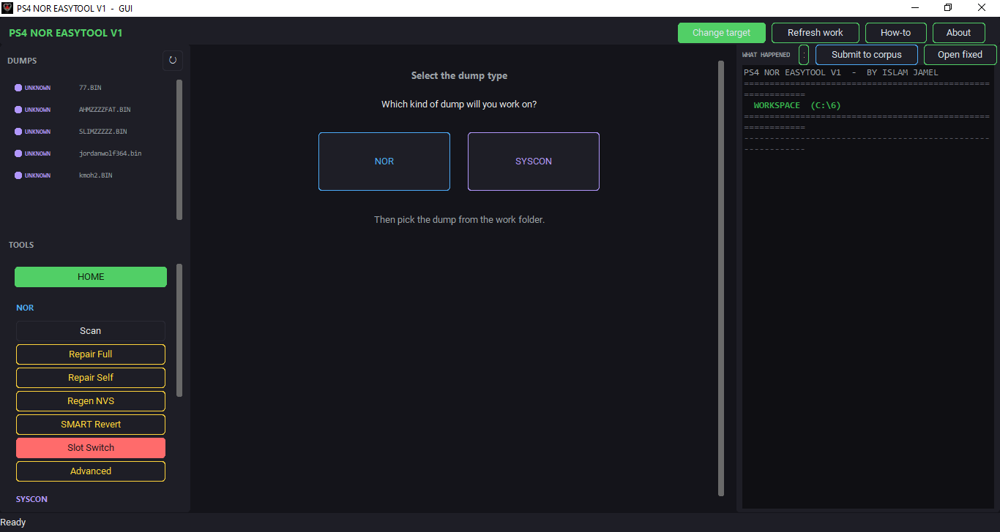
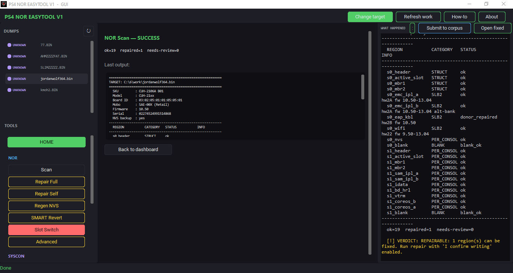
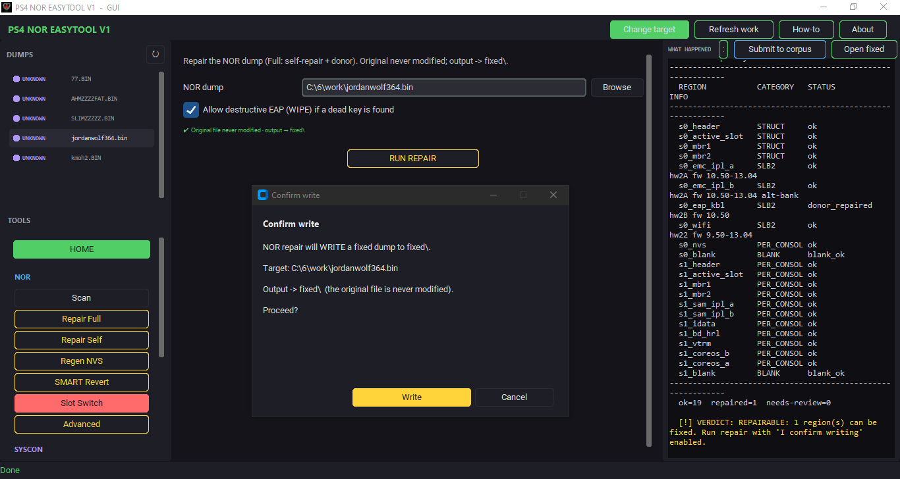
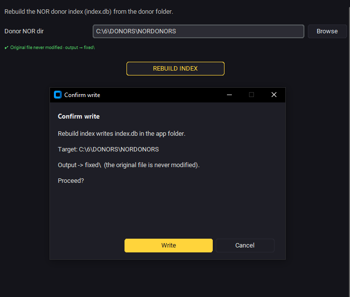
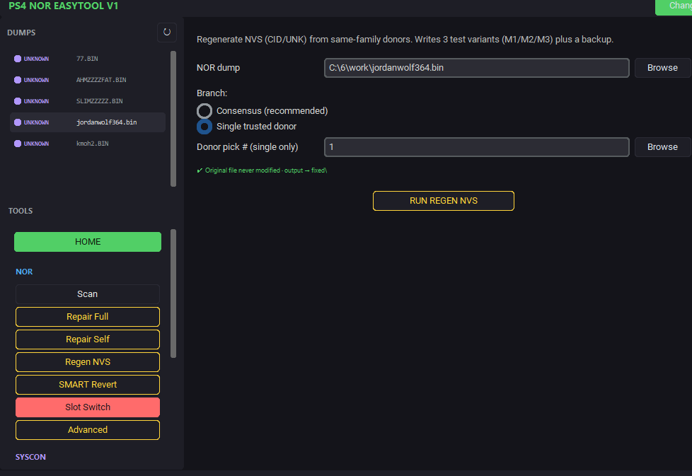
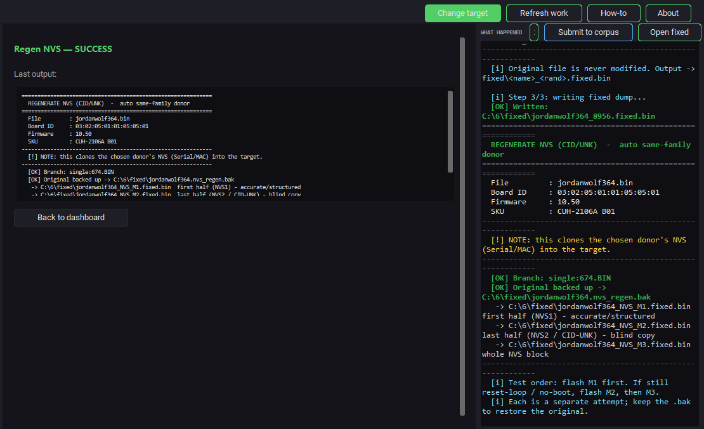
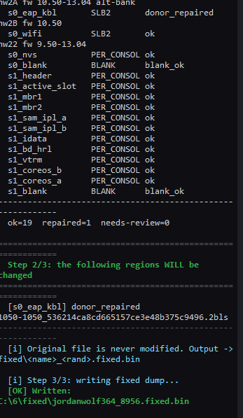
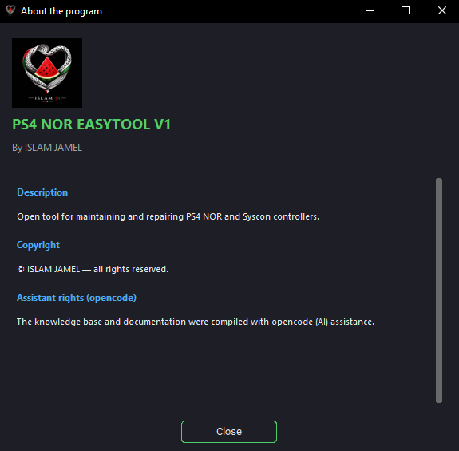
Command-line (CLI) · سطر الأوامر
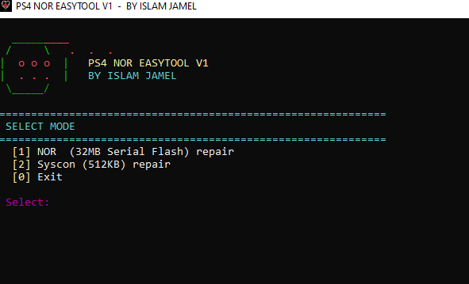
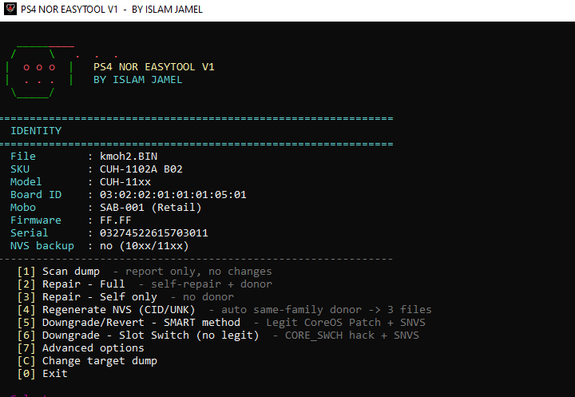
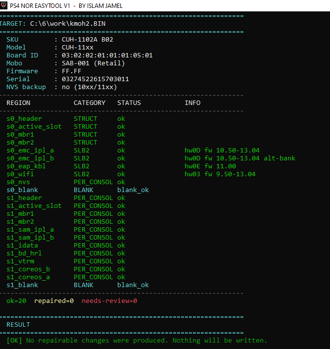
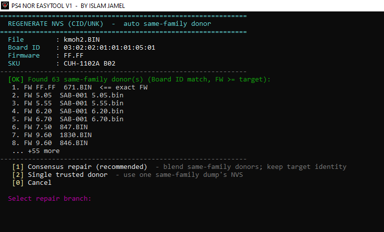
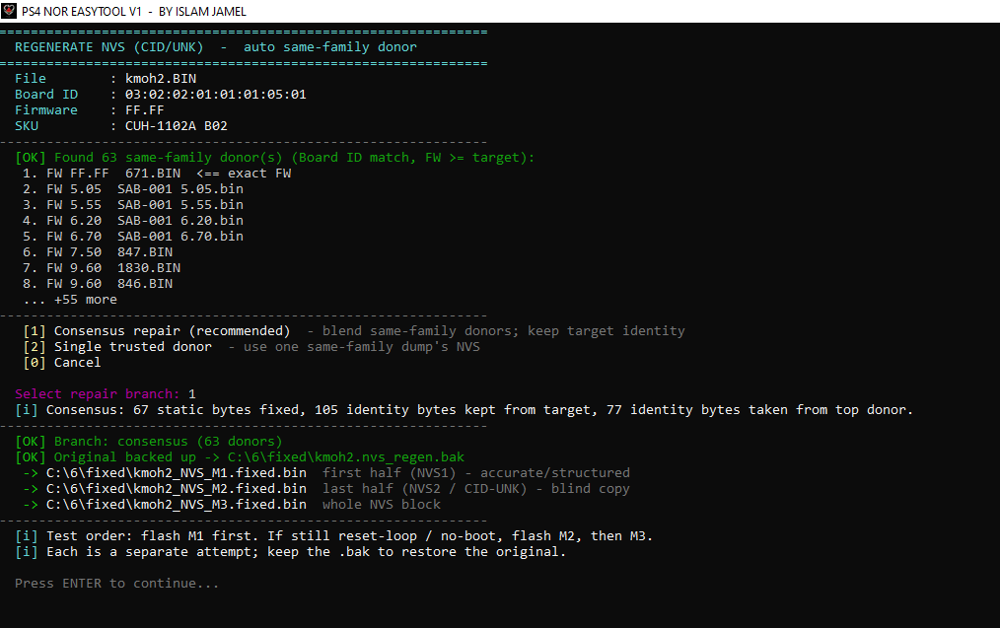